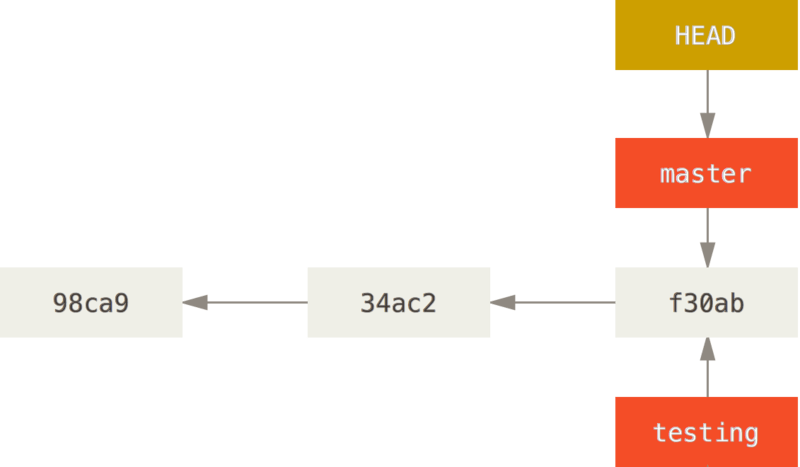

Contents
- git
- gerrit
- repo
git基础概念
git三个工作区域
- 工作目录（working directory）
- 暂存区（staged area）
- git仓库（.git）

文件状态
工作目录下文件的状态
- 被git跟踪的（tracked）
- 未被git跟踪的（untracked）
被跟踪的文件的三种状态
- 已修改（modified）
- 已暂存（staged）
- 已提交（commited）
生命周期

相关git命令
$ git status
$ git status
git基本工作流程
编辑文件
vim/AS
暂存文件
git add
review修改
git status/git diff
提交修改(本地)
git commit
推送到服务器
git push
vim/ASgit addgit status/git diffgit commitgit pushGIT常用命令介绍
- 取出版本：git checkout $commit-id
- 丢弃修改：git checkout -- 文件名
- 添加文件：git add
- 查看状态：git status
- 查看改动：git diff
- 本地提交：git commit
- 推送提交：git push
- 拉取更新：git fetch
- 拉取更新(自动合并）：git pull
- 查看提交记录：git log
- 查看某个提交：git show
文件暂存
- git add $file: 暂存某改动的文件或为被跟踪的文件
- git add $dir: 暂存该目录下所有文件（含有被跟踪的文件）
- git add -u: 暂存该目录下所有改动的文件（不含未跟踪的文件）
- git reset HEAD $file: 取消暂存，文件状态变为被修改的
- git checkout -- $file: 将文件所有修改丢弃
- git rm $file: 将[被跟踪文件]删除
查看文件改动
- git diff $file: 查看[已修改]文件的改动
- git diff: 查看所有[已修改]文件的改动
- git diff --staged <$file>: 查看[已暂存]文件的改动
- git diff --staged: 查看所有[已暂存]文件的改动
- git help diff: 更多高级用法
git diff在命令行下显示文件改动，可以配置使用第三方GUI diff工具.
提交改动
- git commit : 在交互窗口中填写提交信息，默认使用nano编辑器
- git commit -m 'commit message': 直接命令行填写提交信息
- git commit --amend: 重写并覆盖最后一次提交
git commit默认使用nano编辑器，可以自动修改，如配置
git config --global core.editor vim
注意：git commit是将本次修改保存本地的.git目录中，并没有向服务器推送，这是与svn不同的，务必注意。
查看历史记录
- git log: 查看提交记录
- git log $dir/$file: 仅查看某目录或文件的改动
- git log --author=zhuzhongkai: 查看某人的提交记录
- git log --stat: 查看提交时文件的改动
- git log -p : 查看提交时同时给出文件内diff
- git show $commit-id: 仅仅查看某个提交的全部改动
git分支

git分支的实现非常轻量级，git鼓励使用分支，git分支本质上是个活动指针。
上图演示了两个分支:master和testHEAD是git内置的指针，表示当前git仓库所处于的位置。
创建分支
基于当前HEAD指针创建分支
$ git branch $new-branch-name
从任何位置创建分支，并取出版本
$ git checkout -b $new-branch $start_point
注意：从某指针位置创建分支并取出版本到工作目录中，此时HEAD会指向新创建的分支。
工作目录的文件已被改变！如果之前文件有改动，git会尝试自动合并，若合并失败则无法切换分支
查看分支
- git branch -a: 列出所有分支，白字为本地分支，红字为远程分支
- git branch -d: 删除分支
- git branch -D: 分支
git与远程仓库
提交代码
git push $remote $src_branch:$remote_branch
实际执行上述命令时可以省略，如下所示：
git push origin master
拉取远程服务器代码
将远程仓库拉的同步到本地仓库（.git目录），执行完毕后git branch -a 中列出远程分支会更新到服务器仓库状态
git fetch $remote
再执行利用merge或checkout命令合并本地分支或检出分支，或是在本地执行rebase命令
$ git merge origin/master，将当前分支与远程分支合并
$ git checkout -b dev origin/master，基于服务器分支创建新的dev分支
git还提供了一条便捷指令，等价于git fetch + git merge
git pull
添加删除远程仓库
如果一开始使用git init创建的本地仓库，现在想要添加远程仓库
git remote add origin git@github.com:Lody/VirtualAppDoc.git
origin并无特殊含义，只是惯例，实际可以叫任意名字，其他常用参数如下
git remote -v 列出当前添加的远程仓库
git remote remove $remote 删除名为remote的远程仓库
强大的rebase命令
rebase命令基本上可以称为git最强大的子命令了，它支持多种功能，首先是分支衍和
$ git rebase $branch_name
使用rebase修改git历史记录，-i参数弹出交互式命令行窗口
$ git rebase -i HEAD~5
$ git rebase -i HEAD~$commit_id
其他常用命令
$ git cherry-pick $commit_id: 单独合并某个commit
$ git revert $commit_id: 逆转某个commit
$ git format-patch: 生成patch
$ git am xxx.patch: 应用patch文件
$ git diff $commit_id1..$commit_id2 > 1.diff 生成两个commit的差异文件
$ git apply xxx.diff : 应用diff文件
git配置
git按照以下顺序依次加载配置，可直接编辑这些文件，或git config修改
- /etc/gitconfig: 使用 git config --system 修改
- ~/.gitconfig: 使用git config --global 修改
- .git/config: 直接使用git config修改
$ git config --global user.name zhuzhongkai
$ git config --global user.email zhuzhongkai@droi.com
$ git config --global core.editor vim
$ git config --global color.ui auto
git还可以配置别名
git config --global alias.co checkout
git config --global alias.st status